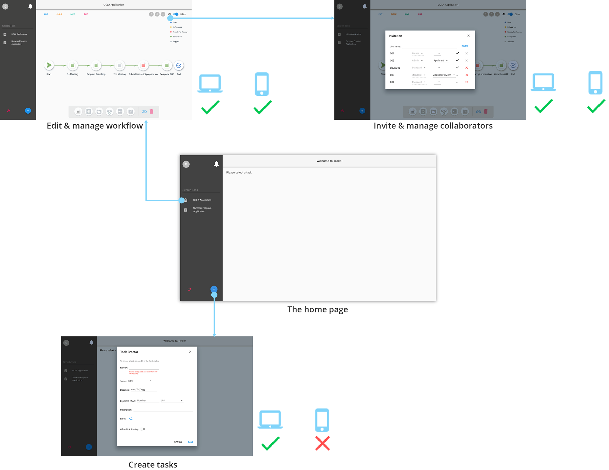
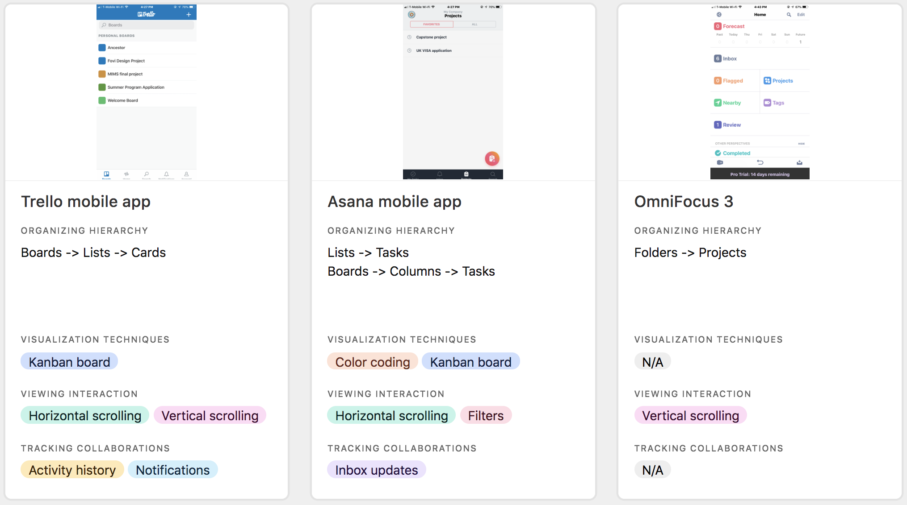
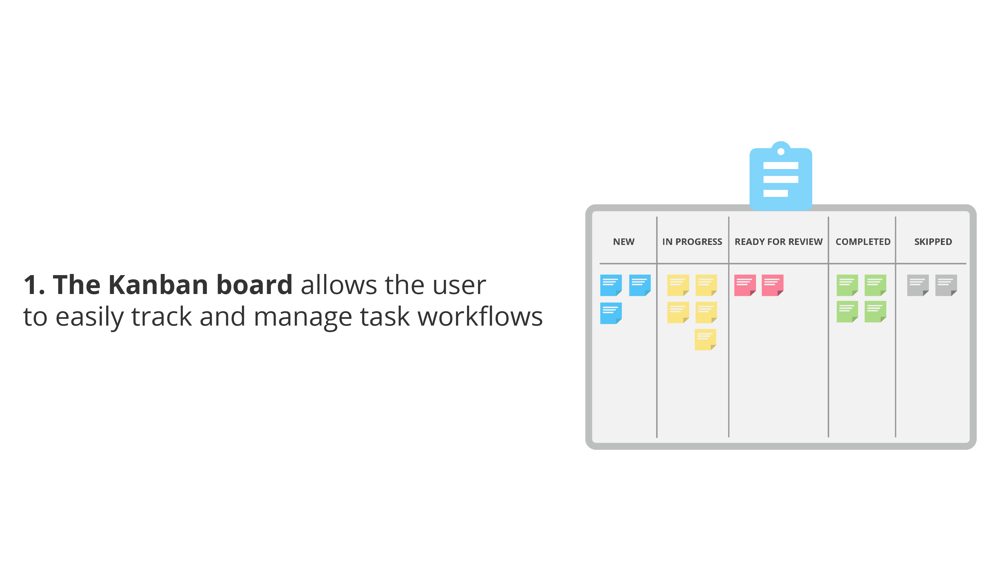
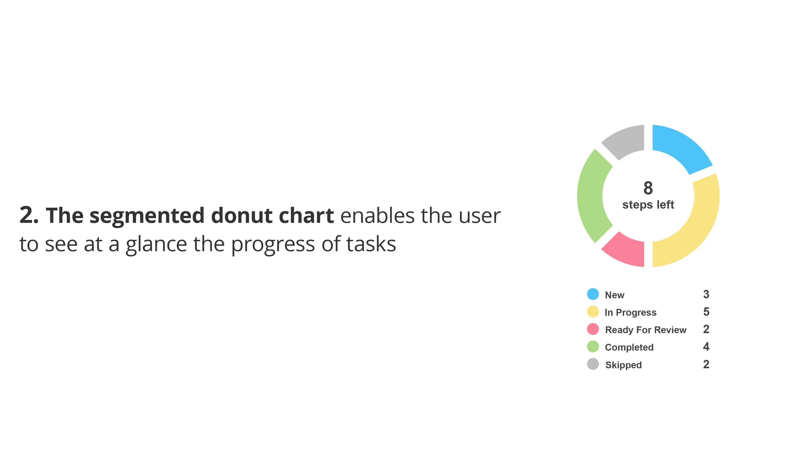
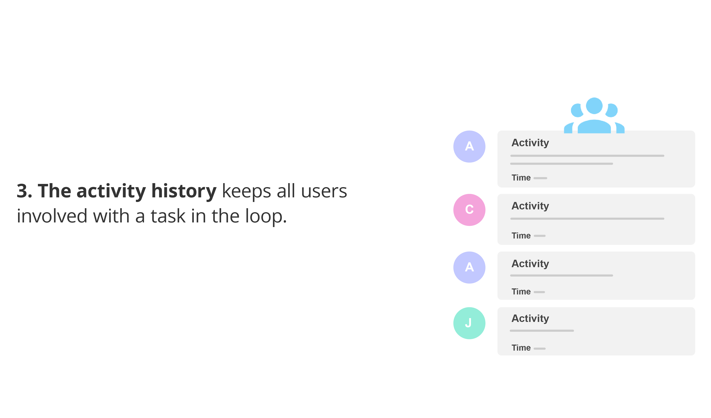
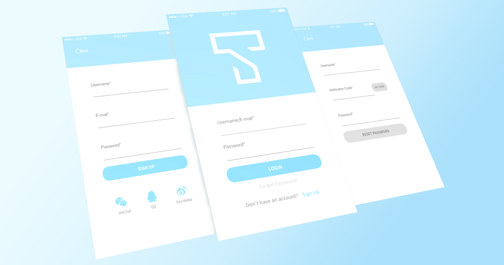

Taskit Mobile App
A cross-platform task management mobile app that makes the user easily and efficiently track and manage task workflow progress.
Background
Taskit, a Bay Area-based startup, builds a web-based task management application that helps people optimally manage tasks of various shapes and sizes. However, their users found it was difficult to quickly see at a glance the task progress as well as manage the workflow whilst on the go. After deciding to build a cross-platform mobile app, the founder came to me and asked to help them address the problem and design the UX & UI of this app.
THE SOLUTION
I adopted the Double Diamond approach to get a solid understanding of the problem to solve and then progressed through to the implementation, following the agile process to iterate with quick feedback from my client.
MY ROLE
As a freelance UX designer, I worked on designing and iterating wireframes, creating pixel-perfect mockups of the mobile app. With user research and competitor analysis, I helped the client capture user needs and turn those needs into solutions that can solve users’ pain points. I also collaborated with the engineering team in launching the app. This is a 5-week project.
TESTIMONIAL
“Qian is a passionate designer with an insightful and solid understanding of UX design. Communications with her were easy and fun! She is able to convert our needs into high quality designs. Her great professional skills and solid design knowledge will prove to be a great asset to any team!”

Sherry Zhou. Founder at Taskit.
Design Process
DISCOVER & DEFINE
In the kick-off meeting with the client, they walked me through three key features of their existing web-based application. Also, according to the market analysis and research done by their product manager, they talked about specific features that they already defined for the to-be-built mobile app.
{kind=link}
The Target User
Individuals as well as teams of all shapes and sizes, who have tasks to complete during a certain time period. Meanwhile, these tasks have steps and routes which can be recorded in a workflow format. Based on the target user identified by the client, I created the following two user scenarios which allow me to think about solutions by incorporating the environmental context when the user interfaces with the mobile app:
Ming, who is planning to travel in U.S. during his summer break, needs to apply for a US visa. As there are many documents as well as time-sensitive steps for the visa application, he is looking for some task management tool which allows him to easily track and manage the document preparation and the application process anywhere, anytime.
X Abroad, a study abroad agency, helps their clients apply for overseas programs in many countries. To improve the efficiency of their service, the agency is looking for some task management tool that makes program advisors efficiently supervise their applicants (e.g., preparing the transcript, personal statement, etc.) while keeping those relevant others such as applicant’s parents in the loop.
A UX competitor analysis
Given the context of Taskit mobile app, I conducted a competitor analysis that focuses on assessing three popular project/task management mobile apps (shown as below) to gain an overview of how they are designed for the user to track and manage the project progress.
{kind=link}
The Problem Statement
On the basis of my client's needs as well as insights uncovered from the user research and the competitor analysis, I created a problem statement: As a part that will be seamlessly integrated with the existing web-based application in the context of mobile usage,
how might we design the Taskit mobile app that helps the user easily keep track of their tasks and manage the workflow in just a few taps while keeping relevant others in the loop?
IDEATION
Being guided by the problem statement and the research, I came up with the idea that consists of the following three information and data visualization techniques:
  WIREFLOWS
In the first round wireframing, after the login/sign-up flow, a bottom navigation bar with three primary destinations was created to guide the user throughout the app:

After showing the first version of wireframing to my client, they provided the feedback as follows:
What The Client Likes
- The Login + Sign Up flow is simple. Also, it provides login options via popular social media accounts.
- The data visualization design with segmented donut chart efficiently presents an overview of the task progress.
- The tab panel with the use of the Kanban technique makes it simple to quickly view the workflow of tasks.
- The Notification flow not only informs the user about task collaboration invitation but also serves a warning about the due dates.
What Need To Be Improved
- Despite the bottom navigation bar makes the app's navigation in a neat and clean manner, a more simple alternative need to be used due to the company's current app development budget constraints.
- Task steps viewing and managing needs to be prioritized.
- The tab panel with the use of the Kanban technique needs to be simplified.
- The screen space use needs to be optimized.
Keep the client feedback on the 1st version of wireframes in mind, an iteration was taken with the following major changes:
- The bottom navigation bar was removed to save the client's app development budget.
- The "Account" and "Notification" flow were located on the homepage.
- The number of steps left for each task were displayed on the homepage, which allows the user to grasp a quick view of task progress.

- The task steps managing flow has been prioritized.
- The progress of the task with the donut chart flow was incorporated into the task steps managing flow.
- The task details and the donut chart were displayed at the same page.

In the design review meeting, the client was satisfied with these major changes that I made in the 2nd version of iteration. Specifically, they really liked the new Home flow design which was more straightforward and intuitive than the 1st version. Nonetheless, the client still pointed out two problems as follows:
Problems
- The bubbles with numbers which display the number of steps left for each task might possibly mislead the user to click them.
- The non-selected radio button doesn't clearly communicate its interactive function.
- The categories of task steps management tab bar can be reorganized to optimize the space.

Solutions
- Remove bubbles with numbers from the homepage; Add the number of steps to each category on the task steps management tab bar, which quickly indicates the progress.
- Replace the non-selected radio buttons with filled label buttons clearly indicate the interactive action.
- Reorganize the task steps into three major categories. which makes the user's finger can easily interact with each tab.

HIGH FIDELITY
In addition to follow the iOS Human Interface Guideline as well as Material Design for Android, the minimalist approach was utilized to create the whole high-fidelity UI. Specifically, all screens have generous amount of white space which marks out the core functional elements of the app. A monochromatic color scheme based on the light sky blue theme color of the web-based product is used. Meanwhile, to maintain the consistency between the web-based product and the mobile app, the same set of colors that indicate task steps with the different status is used. Also, a set of simple and recognizable filled icons are used to represent the functionality as well as content.
- UI for iOS
- UI for Android
Reflection
IMPACT
- Designed an efficient experience for the Taskit mobile app by incorporating effective visual tools such as Kanban technique, segmented donut chart and activity history tracking.
- Simplified the navigation as well as optimized the user flow by reducing the number of screens and clicks.
WHAT I LEARNED
- Iterations brought my client feedback to ensure that the wireframing meets their needs.
- Documentation of different iterations makes me give the client better visibility of the evolution of the design as well as the progress at each iteration.
- Effectively collaborated with the engineering team in implementing the design.